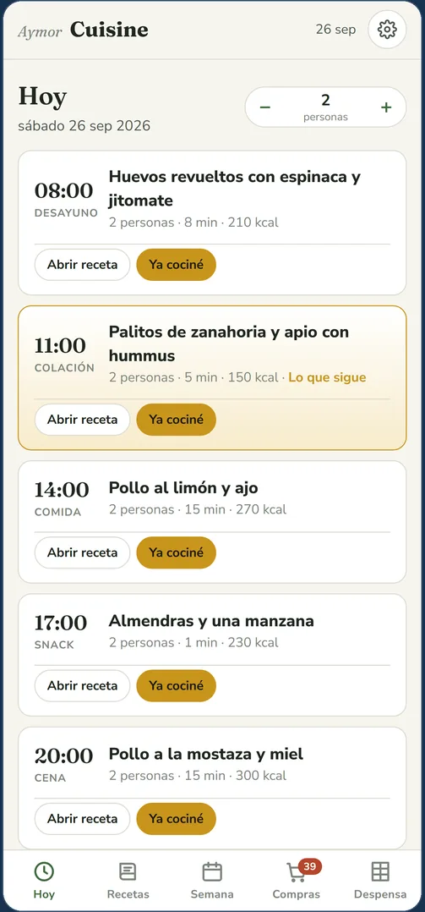
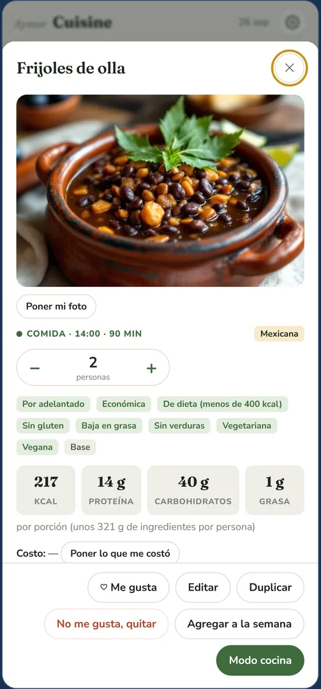
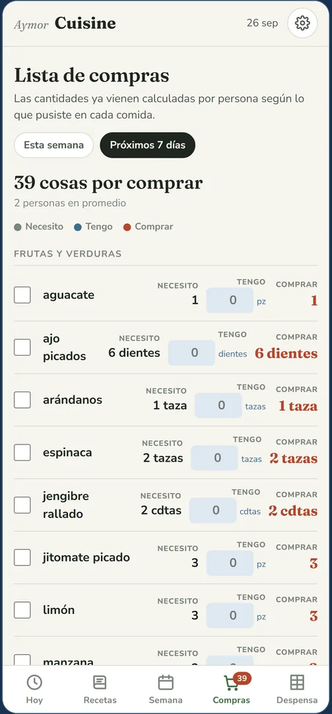
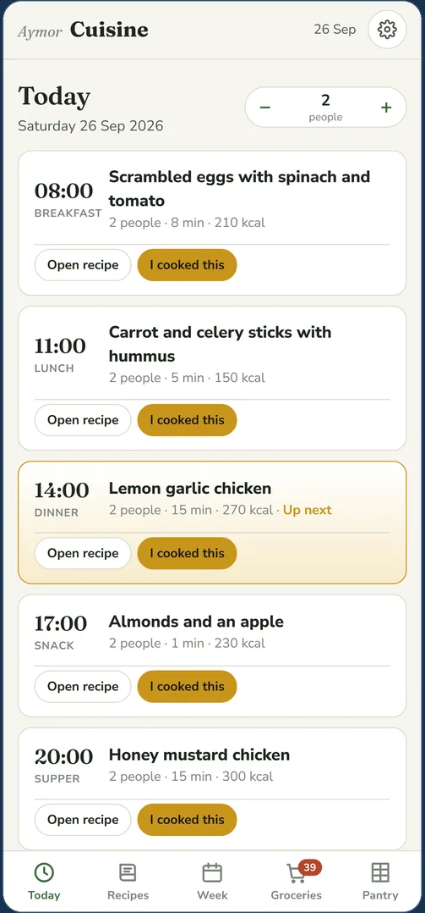
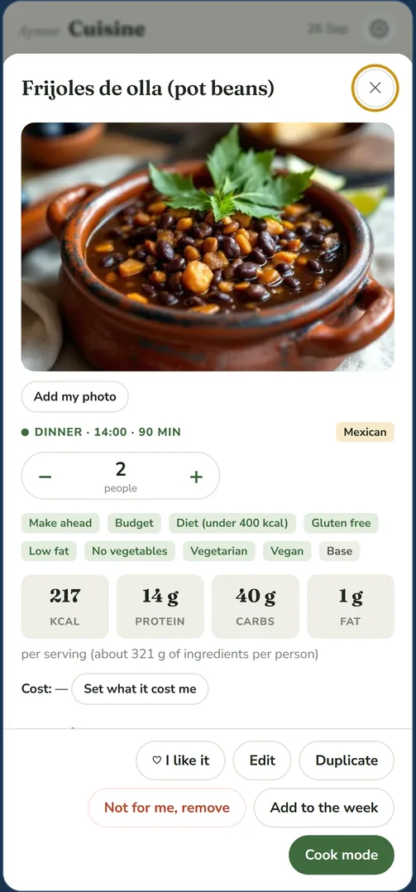
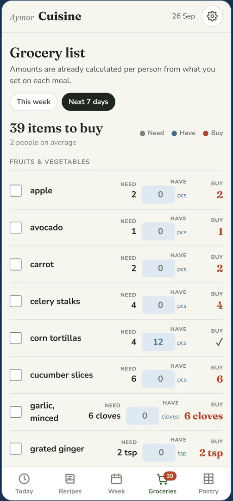
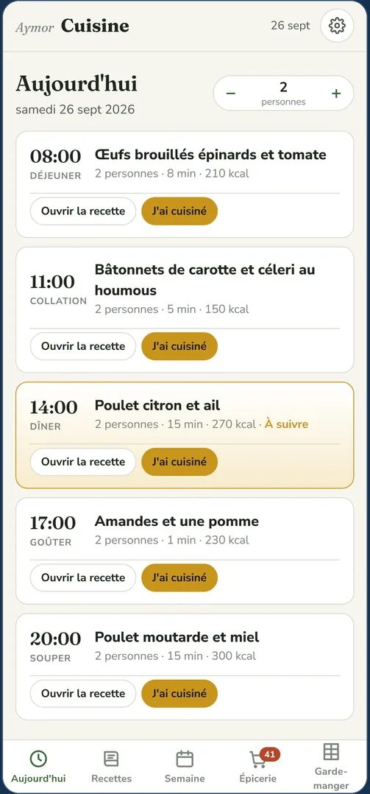
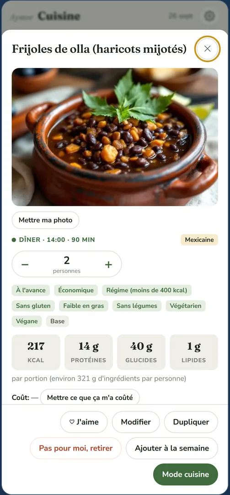
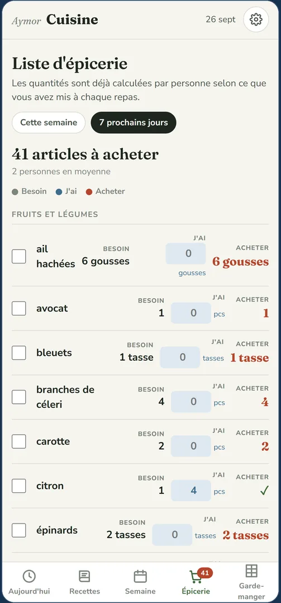

Aymor Apps
344 recetas de verdad, con su foto y con los pasos explicados uno por uno. La semana se arma sola y la lista del súper se hace sola. Todo dentro de tu teléfono, sin internet.

La mayoría de las apps de cocina son cajas vacías: tú tienes que meter tus recetas antes de que sirvan de algo. Esta no.


Nada de esto se descarga después ni se paga aparte.
Mexicana, española, griega, francesa, libanesa, portuguesa y vegetariana. Investigadas en fuentes de gastronomía de cada país, no inventadas.
Calorías, proteína, carbohidratos y grasa de cada plato, contadas ingrediente por ingrediente con la tabla oficial del Departamento de Agricultura de Estados Unidos. Y de cuántos gramos es la porción.
No son platos sueltos: la comida trae sopa, plato fuerte, guarnición y agua fresca. La cena es una cena, no una sopa sola.
Un botón llena los siete días con tus favoritas y con lo que ya tienes, empezando por lo que está por echarse a perder. Sin repetir platillo en tres días.
Escribes lo que hay en el refrigerador y te dice qué puedes hacer ahora mismo, sin ir a la tienda.
Un paso a la vez, en letras grandes, con los ingredientes siempre a la vista y la pantalla que no se apaga con las manos llenas.
Los carbohidratos de cada comida y del día, con aviso cuando una comida se pasa del tope que fijó tu médico. La app cuenta; las decisiones son de tu médico.
Cambia el número de personas y las cantidades se ajustan solas. Escribe tus propias recetas, ponles tu foto y anota cuánto te costó cada platillo.
Tres a cinco personas y la misma pregunta cada tarde a las seis.
Y a quien las recetas de internet le dan por hecho que ya sabe cocinar.
Calorías o carbohidratos, con la receta y el número en el mismo lugar.
Hecha como allá, no como la cuenta un blog de otro país.
Tus datos no salen de tu teléfono. Nada sale. No hay cuenta, no hay correo, no hay contraseña y no hay servidor. Todo lo que escribes y fotografías se queda en tu aparato: ni nosotros lo vemos. La aplicación no se conecta a ningún servicio de internet, ni siquiera para las letras con las que está escrita. Léelo completo en la política de privacidad.
6.99 dólares al mes
Una suscripción, sin contratos largos y sin permanencia. Para entrar escoges una de estas dos:
Se escoge una de las dos, no se juntan. ¿Alguna duda antes de empezar? Escríbenos a aymorcorp@gmail.com.
Sí, completa, con sus 344 fotografías. Solo hace falta conexión la primera vez que la abres.
Español, inglés y francés, completos: no solo los botones, también las 344 recetas y sus pasos.
Sí, y la app les calcula las calorías sola. También puedes ponerles tu propia fotografía.
No. Todo vive en tu teléfono, y el respaldo que la app te da es una copia de seguridad para ese mismo aparato. No hay cuentas de usuario ni sincronización entre teléfonos.
No. Cuenta calorías y carbohidratos, nada más. El límite lo pone tu médico o tu nutricionista.
Aymor Apps
344 real recipes, each with its photo and with the steps explained one by one. The week plans itself and the grocery list builds itself. All inside your phone, no internet needed.

Most cooking apps are empty boxes: you have to put your own recipes in before they do anything. Not this one.


None of this is downloaded later or paid for separately.
Mexican, Spanish, Greek, French, Lebanese, Portuguese and vegetarian. Researched in each country's own cooking sources, not invented.
Calories, protein, carbohydrates and fat for every dish, counted ingredient by ingredient against the official table of the United States Department of Agriculture. And how many grams that serving is.
Not loose dishes: the midday meal comes with soup, main dish, side and agua fresca. Dinner is a dinner, not a bowl of soup.
One button fills all seven days with your favorites and what you already have, starting with whatever is about to spoil. No dish repeats within three days.
Type what's in the fridge and it tells you what you can make right now, without going to the store.
One step at a time, in big letters, with the ingredients always in view and a screen that won't go dark when your hands are full.
Carbohydrates per meal and per day, with a warning when a meal goes over the limit your doctor set. The app counts; the decisions are your doctor's.
Change the number of people and the amounts adjust themselves. Write your own recipes, add your own photos and note what each dish cost you.
Three to five people and the same question every afternoon at six.
Who finds that recipes online assume you already know how to cook.
Calories or carbohydrates, with the recipe and the number in the same place.
Made the way it's made there, not the way a blog from elsewhere tells it.
Your data never leaves your phone. Nothing leaves. No account, no email, no password and no server. Everything you write and photograph stays in your device: not even we see it. The app does not connect to any internet service, not even for the typefaces it's written in. Read the full privacy policy.
6.99 US dollars a month
One subscription, no long contracts and no lock-in. To start, you pick one of these two:
You pick one of the two; they don't combine. Any question before you start? Write to aymorcorp@gmail.com.
Yes, fully, with its 344 photographs. You only need a connection the first time you open it.
Spanish, English and French, in full: not just the buttons, the 344 recipes and their steps too.
Yes, and the app works out their calories for you. You can add your own photographs too.
No. Everything lives in your phone, and the backup the app gives you is a safety copy for that same device. There are no user accounts and no syncing between phones.
No. It counts calories and carbohydrates, nothing more. The limit is set by your doctor or dietitian.
Aymor Apps
344 vraies recettes, chacune avec sa photo et ses étapes expliquées une à une. La semaine se monte toute seule et la liste d'épicerie se fait seule. Tout dans votre téléphone, sans Internet.

La plupart des applications de cuisine sont des boîtes vides : il faut y mettre ses propres recettes avant qu'elles servent à quelque chose. Pas celle-ci.


Rien de tout cela ne se télécharge après ni ne se paie à part.
Mexicaine, espagnole, grecque, française, libanaise, portugaise et végétarienne. Recherchées dans les sources gastronomiques de chaque pays, pas inventées.
Calories, protéines, glucides et gras de chaque plat, comptés ingrédient par ingrédient avec la table officielle du Département de l'Agriculture des États-Unis. Et le poids en grammes de la portion.
Pas des plats isolés : le repas vient avec soupe, plat principal, accompagnement et agua fresca. Le souper est un souper, pas un bol de soupe.
Un bouton remplit les sept jours avec vos favorites et ce que vous avez déjà, en commençant par ce qui va se perdre. Aucun plat ne se répète en trois jours.
Vous écrivez ce qu'il y a dans le frigo et elle vous dit ce que vous pouvez faire tout de suite, sans aller au magasin.
Une étape à la fois, en grosses lettres, avec les ingrédients toujours visibles et un écran qui ne s'éteint pas quand on a les mains pleines.
Les glucides de chaque repas et de la journée, avec un avertissement quand un repas dépasse la limite fixée par votre médecin. L'application compte ; les décisions appartiennent à votre médecin.
Changez le nombre de personnes et les quantités s'ajustent seules. Écrivez vos propres recettes, mettez-y vos photos et notez ce que chaque plat vous a coûté.
Trois à cinq personnes et la même question chaque après-midi à six heures.
Et à qui les recettes sur Internet supposent qu'on sait déjà cuisiner.
Calories ou glucides, avec la recette et le chiffre au même endroit.
Faite comme là-bas, pas comme la raconte un blogue d'ailleurs.
Vos données ne quittent pas votre téléphone. Rien ne sort. Pas de compte, pas de courriel, pas de mot de passe, pas de serveur. Tout ce que vous écrivez et photographiez reste dans votre appareil : nous non plus ne le voyons pas. L'application ne se connecte à aucun service Internet, pas même pour les polices avec lesquelles elle est écrite. Lisez la politique de confidentialité au complet.
6,99 dollars américains par mois
Un abonnement, sans contrat long et sans engagement. Pour commencer, vous choisissez l'une des deux :
On choisit l'une des deux; elles ne se cumulent pas. Une question avant de commencer ? Écrivez à aymorcorp@gmail.com.
Oui, au complet, avec ses 344 photos. Il ne faut une connexion que la première fois que vous l'ouvrez.
Espagnol, anglais et français, au complet : pas seulement les boutons, les 344 recettes et leurs étapes aussi.
Oui, et l'application en calcule les calories toute seule. Vous pouvez aussi y mettre vos propres photos.
Non. Tout vit dans votre téléphone, et la sauvegarde que l'application vous donne est une copie de sécurité pour ce même appareil. Il n'y a ni comptes ni synchronisation entre téléphones.
Non. Elle compte les calories et les glucides, rien de plus. La limite est fixée par votre médecin ou votre nutritionniste.